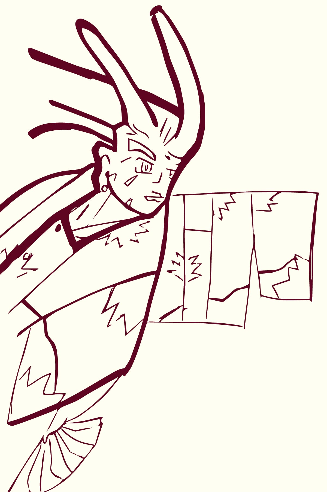

Michiyuki
A Michiyuki jacket (mee-chi-yoo-kee) literally translates “to go on the road”. In a self explainitory way, it goes over one’s kimono dress to protect the dress from the elements. Was usually reserved for the wealthy as they were the only to be able to even afford a kimono, but these days it’s more of a fashion statement.